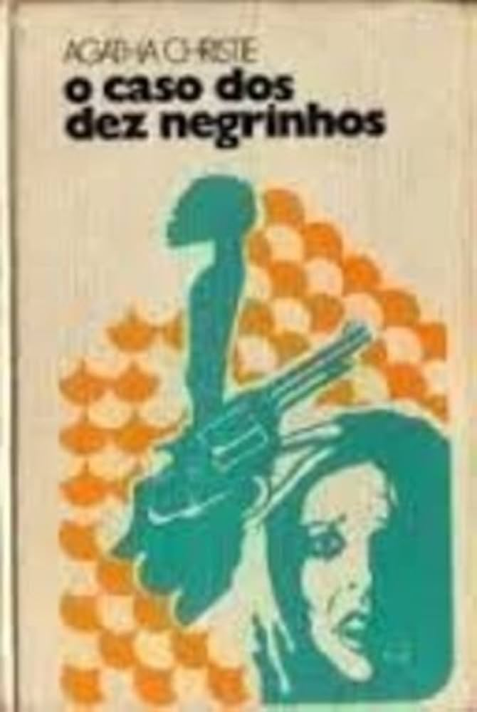
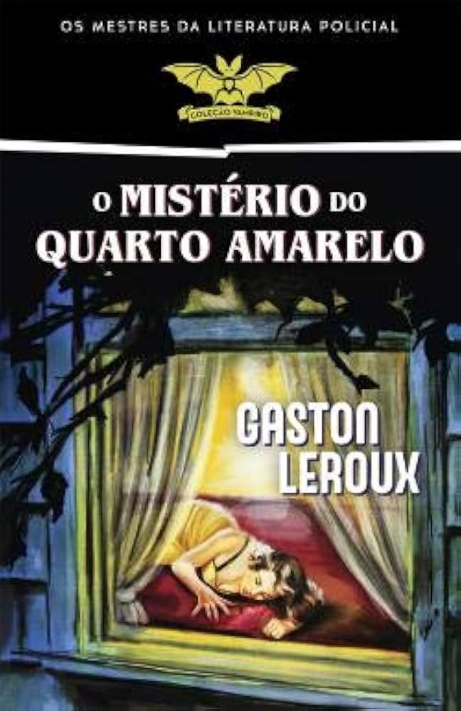
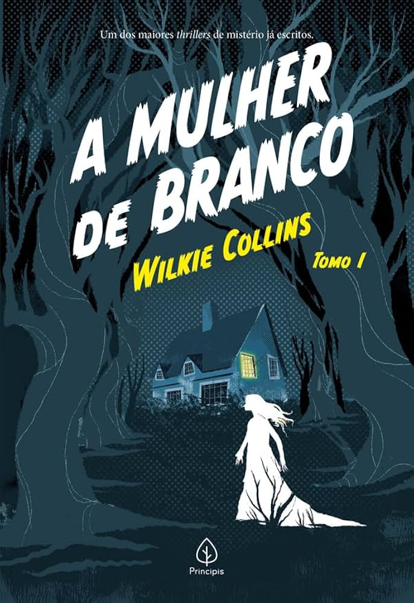
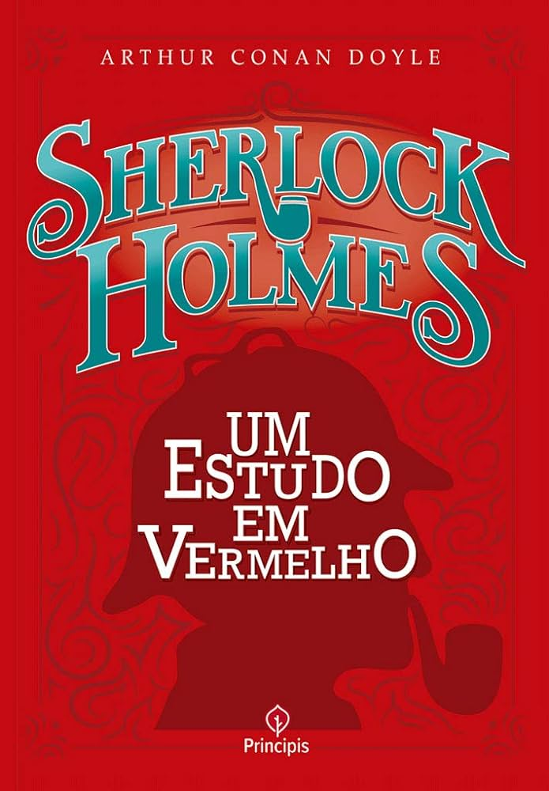

Assassinato no Expresso do Oriente
Agatha Christie
Um assassinato ocorre em um trem de luxo e Hercule Poirot precisa descobrir o culpado antes que seja
tarde.
Saiba Mais
Saiba Mais
O Caso dos Dez Negrinhos
Agatha Christie

Dez pessoas isoladas numa ilha começam a ser assassinadas uma a uma; ninguém está seguro.
Saiba Mais
Saiba Mais
O Mistério do Quarto Amarelo
Gaston Leroux

Um crime aparentemente impossível desafia a lógica, e o detetive tenta resolver o mistério.
Saiba Mais
Saiba Mais
O Alienista
Machado de Assis

Um médico decide estudar a loucura, mas acaba colocando a cidade inteira em questionamento.
Saiba Mais
Saiba Mais
A Mulher de Branco
Wilkie Collins

Mistério, intriga e segredos sombrios rondam a vida de uma mulher misteriosa vestida de branco.
Saiba Mais
Saiba Mais
Sherlock Holmes: Um Estudo em Vermelho
Arthur Conan Doyle

O primeiro caso de Sherlock Holmes, onde ele usa dedução e lógica para resolver um assassinato
intrigante.
Saiba Mais
Saiba Mais
O Jogo do Anjo
Carlos Ruiz Zafón
Mistério literário em Barcelona: um escritor encontra segredos sombrios ligados a um misterioso livro.
Saiba Mais
Saiba Mais
Garota no Trem
Paula Hawkins
Uma mulher observa algo suspeito todos os dias da janela do trem e acaba envolvida em um crime.
Saiba Mais
Saiba Mais
Antes de Dormir
S. J. Watson
Jantar Secreto
Raphael Montes

Jovens organizam jantares ilegais para a elite, mas o crime e a ambição levam a consequências mortais.
Saiba Mais
Saiba Mais